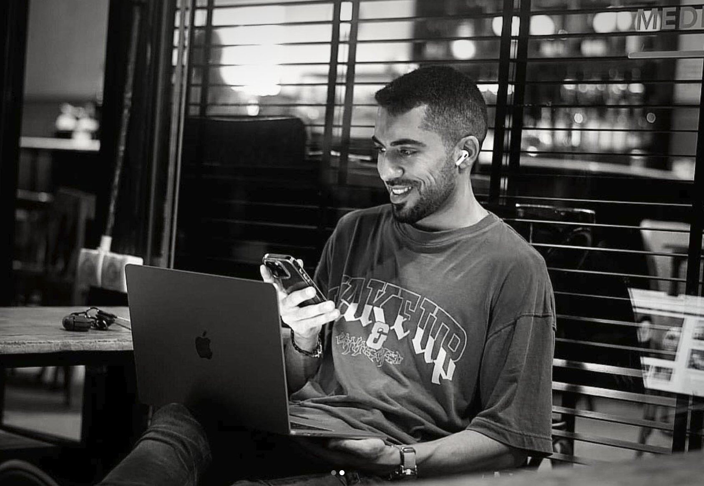
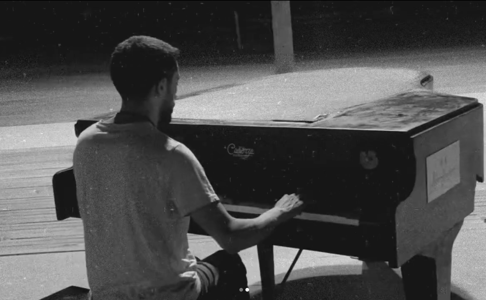

Experience
Hi, I'm a UX/UI Designer with several years of experience specializing in B2B systems, complex workflows, and conversion-driven experiences. With a background in visual communication, I combine strong visual foundations with strategic UX thinking to create scalable, intuitive, and impactful digital products.
I have experience leading end-to-end design processes — from research and information architecture to high-fidelity UI and design systems — with a strong focus on usability, clarity, and CRO.
My journey into tech was built through resilience, self-learning, and curiosity after transitioning from a strict Haredi background into the creative and technological world. I work with tools such as Figma, Claude, Midjourney, Gemini, and AI-driven workflows, and I'm always eager to learn, grow, and collaborate on meaningful products.
- 3+Years of experience
- 10+Projects
- 4Design systems
A Glimpse of Me and My World
When I'm not designing, I'm usually at a piano somewhere, chasing a melody until it finally sits right.
The rest of the time I'm buried in some new tool or idea — taking things apart to see how they work. Music keeps me patient; curiosity keeps me building.

